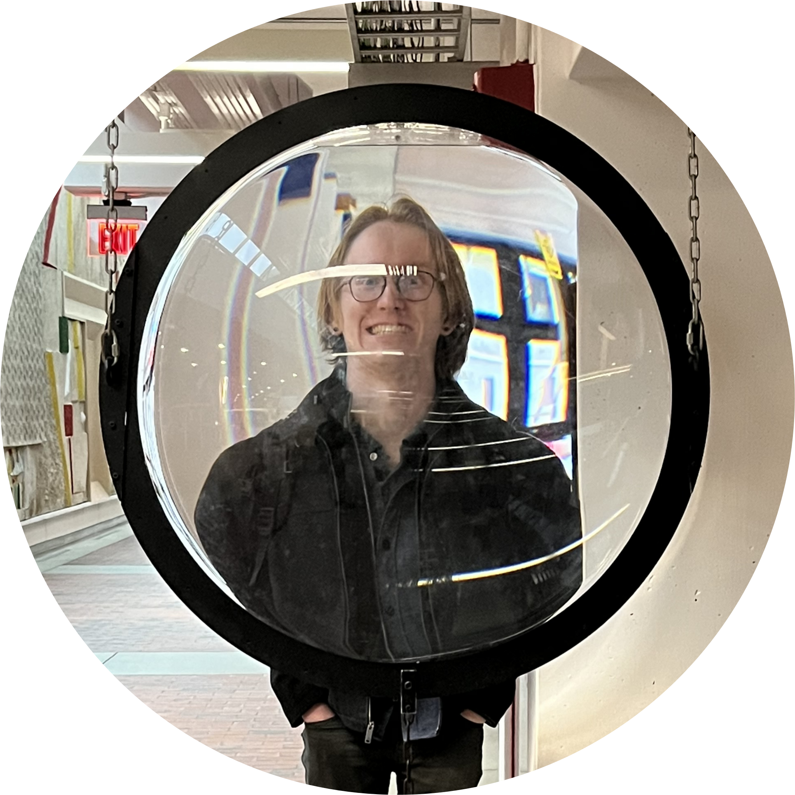
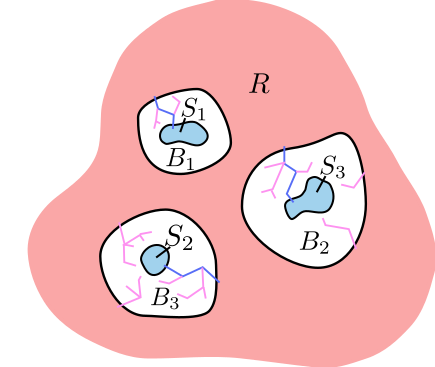
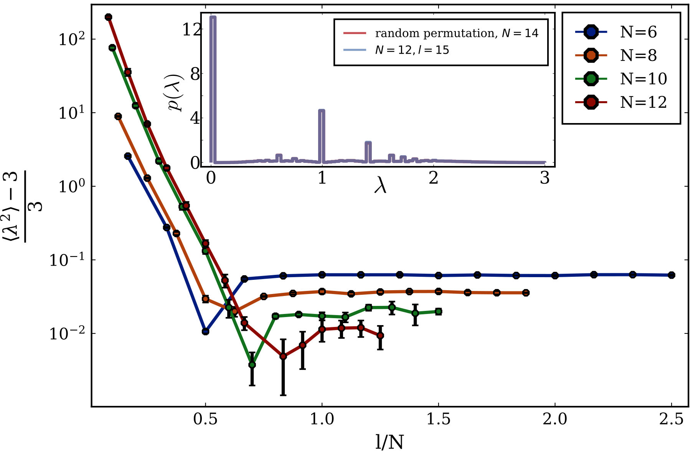
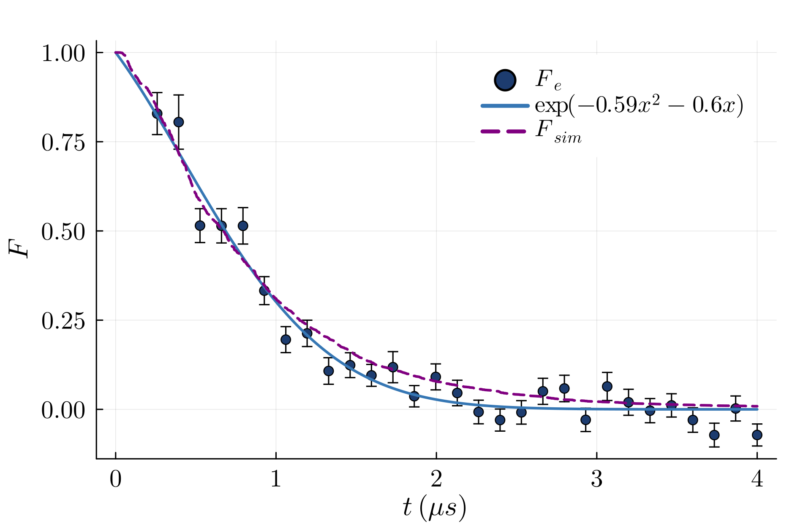
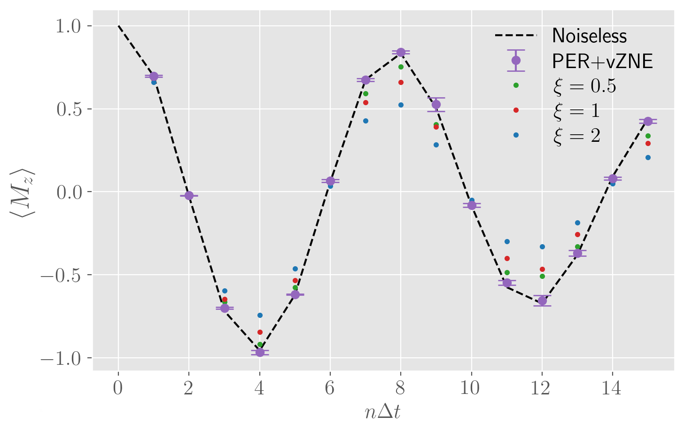

About

Physics grad student @ CU Boulder e: first.last@colorado.edu
I am a first-year grad student in the Physics Department at the University of Colorado, Boulder working with Prof. Andrew Lucas's group. I am a mathematical physicist who is fascinated by the connection between quantum computing and emergent phenomena in physics. My research focuses on quantum dynamics, exotic quantum phases of matter, and quantum complexity. I am a Linux fanatic and a computer hobbiest. In my free time I like playing basketball, rock-climbing, and playing the flute. I also enjoy language learning, and I speak Spanish fluently and Hindi proficiently.
Research
Novel Lieb-Robinson bounds and exponential-in-volume tails

Lieb-Robinson bounds quantify the speed at which information can propagate through matter with local interactions. With Prof. Andrew Lucas and collaborators Chao Yin and Carolyn Zhang, I am working on developing novel Lieb-Robinson bounds for applications in quantum computing and condensed matter physics, such as simulation complexity and spontaneous symmetry breaking phases. The manuscript will be available by the end of January.
Crossover between classical and quantum information dynamics in operator entanglement spectrum

Chaotic quantum dynamics are characterized by operator spreading and operator scrambling, where operators in the Heisenberg picture evolve to fill the dynamical lightcone and appear suitably random. This process is quantified by the operator entanglement spectrum. In collaboration with Professors Thomas Iadecola, Justin Wilson, and Claudio Chamon, I found that the operator entanglement spectrum discriminates between classical information chaos and quantum information chaos, and also creates a bridge between the two. The manuscript will (most likely) be available by mid-February. This work was supported by the DOE as part of the 2024 SULI program.
Benchmarking with quantum chaos

Chaotic quantum evolution produces states with a ``speckle pattern," referring to a concentration of the measurement probabilities around a small number of outcomes. This is the well-known Porter-Thomas distribution. The sensitivity of these speckles to noise provide a tool for characterizing the fidelity of quantum simulators. Working at QuEra Computing Inc. in the summer of 2023, I designed and carried out benchmarking experiments to characterize the Aquila quantum simulator using quantum chaos. I also developed a noise modelling and simulation toolkit to add to the Bloqade toolchain. The code is publicly available here and an in-depth tutorial may be found here.
Scalable quantum error mitigation

Near-term quantum computers do not yet feature error correction and suffer from noise that makes longer computations difficult, but they can still be useful. Working with Prof. Peter Orth and collaborators from the Unitary Fund Nathan Shammah, Misty Wahl, Nate Stemen, and William Zeng, I developed a novel method for extracting noise-mitigated expectation values from noisy quantum computers. This method, based on the restricted connectivity of quantum processors, includes a scalable noise tomography process and a low-overhead error mitigation scheme. I also developed a Python package for automating this process, and the code is available for use here. This method was employed by IBM in a significant experiment in the summer of 2023. I was honored to present this work at the IEEE SC 22 HPC conference in Dallas. The paper can be found here.